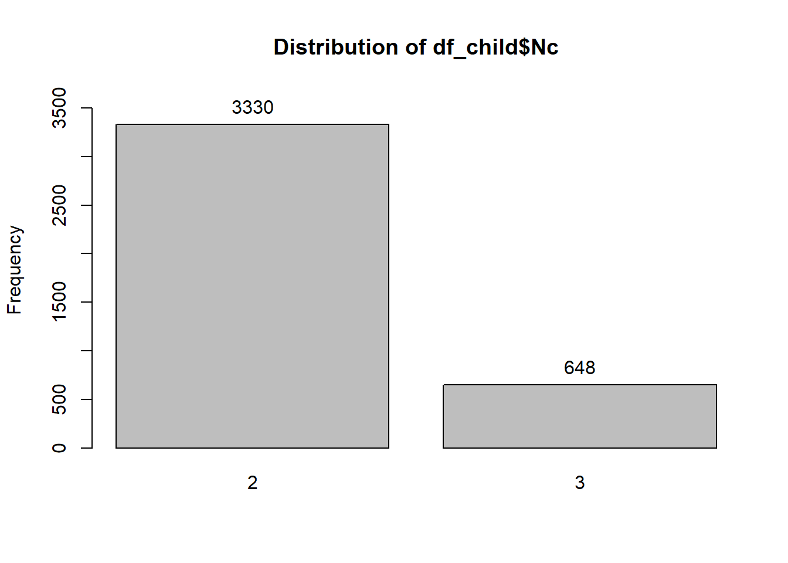

Chapter 3. Random-intercept models with covariates
Authors
JoonHo Lee (jlee296@ua.edu)
Mehdi Rajeb
Published
November 27, 2022
Introduction (3.1)
In this chapter, the variance-component model is extended to introduce random-intercept models with covariates.Readers can easily identify several overlapping features of variance-component models with random-intercept model, however, this chapter will introduce the differences between within-cluster and between-cluster covariate effects.
Does smoking during pregancy affect birthweight? (3.2)
The data used in this chapter investigates the effect of smoking on birth outcomes with the Natality data sets derived from birth certificates by the U.S. National Center for Health Statistics. The dataset used by @abrevaya2006estimating is available from the Journal of Apllied Econometrics Data Archive. The data set contains 8604 births from 3978 mothers. Also following variables are available in the data set smoking.dta.
momid: mother identifier
birwt: birth weight (in grams)
smoke: dummy variable for mother smoking during pregnancy (1: smoking; 0: not smoking)
male: dummy variable for baby being male (1: male , 0: female)
meduc: mother’s education (reference category: did not graduate from high school)
hsgrad: dummy variable for having graduated from high school ( 1: graduated; 0: otherwise)
somecoll: dummy variable for having some college education, but no degree (1: some college; 0: otherwise)
collgrad: dummy variable for having graduated from college (1: graduated; 0: otherwise)
married: dummy variable for mother being married (1: married; 0: unmarried)
black : dummy variable for mother being Black(1: Black; 0: White)
Kessner index (reference category: Kessner index = 1, or adequate prenatal care)
kessner2: dummy variable for Kessner index = 2, or intermediate prenatal care (1: index = 2; 0: otherwise)
kessner3: dummy variable for Kessner index = 3, or inadequate prenatal care (1: index=3; 0: otherwise)
Timing of first prenatal visit(reference category: first trimester)
novisit: dummy variable for no prenatal care visit(1: no visit; 0: otherwise)
pretri2: dummy variable for first prenatal care visit having occurred in second trimester( 1: yes; 0: otherwise)
pretri3: dummy variable for first prenatal care visit having occurred in third trimester (1: yes; 0: otherwise)
Data structure and descriptive statistics(3.2.1)
The data has two-level structure with births (or children or pregnancies) as unit level 1 and mothers as cluster at level 2. It is important to understand that in multilevel models, the dependent / response variable varies at the lowest level for different values of different level 1 units within the same level of cluster. It is also important to understand whether variables vary at levels 1 and levels 2 but also to understand how much they vary at each of the levels.
let us have a look at the smoking.dta data set.
# Let us get the data loaded in Rdf <-read_dta("smoking.dta")# let us have a look at the data.head(df)
It is useful to know not just whether variables vary at levels 1 and 2 but also how much they vary at each of the levels. To do so, we write the following R-function for specific variables.
# R code for xtsum function# Let us select the variables of interests.df_temp <- df %>% dplyr::select(momid, idx, birwt, smoke, black)# my_xtsum function: equivalent to Stata's xtsum command. my_xtsum <-function(data, group_id, y){# Define a function to calculate summary statistics sum_stat <-function(data, y ){ data %>%summarize(Mean =mean({{y}}, na.rm =TRUE), Std.dev. =sd({{y}}, na.rm =TRUE), Min =min({{y}}, na.rm =TRUE), Max =max({{y}}, na.rm =TRUE), N =n() ) }# Overall vec_overall <- data %>%sum_stat({{y}})# Between vec_between <- data %>%group_by({{group_id}}) %>%summarize(gr_mean =mean({{y}}, na.rm =TRUE) ) %>%ungroup() %>%sum_stat(y = gr_mean)# Within vec_within <- data %>%group_by({{group_id}}) %>%mutate(gr_mean =mean({{y}}, na.rm =TRUE), dev = {{y}} - gr_mean, size =n() ) %>%ungroup() %>%summarize(Mean =mean(dev, na.rm =TRUE) + vec_overall$Mean, Std.dev. =sd(dev, na.rm =TRUE), Min =min(dev, na.rm =TRUE) + vec_overall$Mean, Max =max(dev, na.rm =TRUE) + vec_overall$Mean, N =mean(size) ) xtsum<-bind_rows( vec_overall, vec_between, vec_within ) xtsum<-as.data.frame(xtsum)rownames(xtsum)<-c("overall", "between", "within") xtsum}
We specified the my_xtsum() function. Let us calculate the between group and within group summary statistics.
Summary statistics for birwt
# Summary statistics of birwtmy_xtsum(df_temp, momid, birwt)
Mean Std.dev. Min Max N
overall 3469.931 527.1394 284.000 5642.000 8604.000000
between 3467.225 451.1943 1361.000 5183.500 3978.000000
within 3469.931 276.7966 1528.431 5411.431 2.225941
Summary statistics for smoke
# Summary statistics of Smokemy_xtsum(df_temp, momid, smoke)
Mean Std.dev. Min Max N
overall 0.1399349 0.3469397 0.0000000 1.0000000 8604.000000
between 0.1424501 0.3216459 0.0000000 1.0000000 3978.000000
within 0.1399349 0.1368006 -0.5267318 0.8066016 2.225941
Summary statistics for black
# Summary statistics of blackmy_xtsum(df_temp, momid, black)
Mean Std.dev. Min Max N
overall 0.07171083 0.2580235 0.00000000 1.00000000 8604.000000
between 0.07139266 0.2575120 0.00000000 1.00000000 3978.000000
within 0.07171083 0.0000000 0.07171083 0.07171083 2.225941
In this case, the total number of observations is N =8604 and the number of clusters is 3978.
Lets consider the mean across mothers, or the proportion of mothers who are black.
# Summarizeing data for only unique mothers who are black. df_black<- df %>%group_by(momid) %>%mutate(mean_black =mean(black, na.rm=TRUE)) %>%ungroup() %>%distinct(momid, .keep_all = T) %>%summarise( Obs =n(), Mean =mean(mean_black, na.rm = T), Std.Dev. =sd(mean_black, na.rm= T), Min =min(mean_black, na.rm=T), Max =max(mean_black, na.rm=T) )df_black <-as.data.frame(df_black)rownames(df_black)<-c('black')df_black
Obs Mean Std.Dev. Min Max
black 3978 0.07139266 0.257512 0 1
We can also calculate the number of children per mother.
# Counting number of child per motherdf_child <- df %>% dplyr::select(momid) %>%group_by(momid) %>%mutate(Nc =n())%>%ungroup() %>%distinct(momid, .keep_all = T) # Frequency distribution for children per mother.epiDisplay::tab1(df_child$Nc, cum.percent = T)

df_child$Nc :
Frequency Percent Cum. percent
2 3330 83.7 83.7
3 648 16.3 100.0
Total 3978 100.0 100.0
For level-1 variables such as smoke, we can also produce tables of overall summaries.
#Overall percentage of smokersepiDisplay::tab1(df$smoke, cum.percent = F)
df$smoke :
Frequency Percent
0 7400 86
1 1204 14
Total 8604 100
We can also calculate between-group percentages.
# Between group percentages.# Group percentages for smokersbtwn_s<- df %>% dplyr::select(momid, smoke) %>%summarise(N =n_distinct(momid),momid= momid, smoke = smoke ) %>%filter(smoke ==1) %>%group_by(momid) %>%ungroup() %>%distinct(momid, .keep_all = T) %>% dplyr::summarise(Freq =n(), Percent = Freq/N[1] ) #Group percentages for non-smokersbtwn_ns<- df %>% dplyr::select(momid, smoke) %>%summarise(N =n_distinct(momid),momid= momid, smoke = smoke ) %>%filter(smoke ==0) %>%group_by(momid) %>%ungroup() %>%distinct(momid, .keep_all = T) %>%summarise(Freq =n(), Percent = Freq/N[1] ) # Binding group percentages for smokers and non-smokersbtwn<-rbind(btwn_ns, btwn_s)btwn<-as.data.frame(btwn)rownames(btwn)<-c("Nonsmoke", "smoke")btwn
We can us different R function to fit random-intercept models by maximum likelihood (ML) method. We can also estimate the random-intercept models using restricted maximum-likelihood estimation (REML) methods.To estimate random intercept model, we can use R-PLM package, and plm function
# To estimate random intercept model, we can use R-PLM package, and plm function. model_formula_1<- birwt ~ smoke + male+ mage + hsgrad +somecoll+ collgrad+ married +black+ kessner2+ kessner3+ novisit +pretri2 +pretri3model_1<-plm(formula= model_formula_1, data = df, model ="random", index =c("momid"),vcov = vcovHC )summary(model_1)
Oneway (individual) effect Random Effect Model
(Swamy-Arora's transformation)
Call:
plm(formula = model_formula_1, data = df, model = "random", index = c("momid"),
vcov = vcovHC)
Unbalanced Panel: n = 3978, T = 2-3, N = 8604
Effects:
var std.dev share
idiosyncratic 136100.4 368.9 0.543
individual 114687.9 338.7 0.457
theta:
Min. 1st Qu. Median Mean 3rd Qu. Max.
0.3898 0.3898 0.3898 0.4073 0.3898 0.4676
Residuals:
Min. 1st Qu. Median Mean 3rd Qu. Max.
-2789.35 -217.93 2.02 0.39 235.73 1637.28
Coefficients:
Estimate Std. Error z-value Pr(>|z|)
(Intercept) 3116.7001 40.9655 76.0810 < 2.2e-16 ***
smoke -218.0810 18.1819 -11.9944 < 2.2e-16 ***
male 120.9589 9.5598 12.6529 < 2.2e-16 ***
mage 8.1162 1.3470 6.0256 1.685e-09 ***
hsgrad 56.8514 25.0927 2.2657 0.0234725 *
somecoll 80.6700 27.3706 2.9473 0.0032053 **
collgrad 90.7878 28.0561 3.2359 0.0012125 **
married 49.9368 25.5609 1.9536 0.0507435 .
black -211.3796 28.3433 -7.4578 8.797e-14 ***
kessner2 -92.9091 19.9325 -4.6612 3.144e-06 ***
kessner3 -150.7734 40.8419 -3.6916 0.0002228 ***
novisit -29.9843 65.7128 -0.4563 0.6481788
pretri2 92.8035 23.1971 4.0006 6.317e-05 ***
pretri3 178.6026 51.6507 3.4579 0.0005444 ***
---
Signif. codes: 0 '***' 0.001 '**' 0.01 '*' 0.05 '.' 0.1 ' ' 1
Total Sum of Squares: 1364600000
Residual Sum of Squares: 1179100000
R-Squared: 0.13613
Adj. R-Squared: 0.13482
Chisq: 691.51 on 13 DF, p-value: < 2.22e-16
The error estimates in the estimated model are not robust. To estimate the robust standard errors, we need to run additional codes.
# Let us use the following code to obtain the robust standard errors.model_2<-coeftest( model_1, vcov.=function(x)vcovHC(x, type ='sss') )# Let us have a look at the estimates now. model_2
Coefficients of determinations or variance explained (3.5)
Coefficients of determination is denoted by R-squred, and can be explained as the proportional reduction in prediction error variance, comparing the model of interest that does not include any covariate.
Let us first fit the null model (unconditional model).
# Estimation of null modelmodel_formmula_4 <-birwt ~ (1|momid)model_4<-lmer(formula= model_formmula_4, data = df, REML = F)summary(model_4)
Linear mixed model fit by maximum likelihood . t-tests use Satterthwaite's
method [lmerModLmerTest]
Formula: model_formmula_4
Data: df
AIC BIC logLik deviance df.resid
130957.0 130978.2 -65475.5 130951.0 8601
Scaled residuals:
Min 1Q Median 3Q Max
-6.2746 -0.4860 0.0036 0.5054 4.0506
Random effects:
Groups Name Variance Std.Dev.
momid (Intercept) 135635 368.3
Residual 142625 377.7
Number of obs: 8604, groups: momid, 3978
Fixed effects:
Estimate Std. Error df t value Pr(>|t|)
(Intercept) 3467.969 7.138 3959.308 485.9 <2e-16 ***
---
Signif. codes: 0 '***' 0.001 '**' 0.01 '*' 0.05 '.' 0.1 ' ' 1
Let us now fit a random-intercept model that includes only level-2 covariates
# Estimation of random-intercept model with level 2 variables.model_formula_5 <-birwt~ hsgrad + somecoll+ collgrad+ married+ black+(1|momid)model_5<-lmer(formula = model_formula_5, data=df, REML= F)summary(model_5)
Linear mixed model fit by maximum likelihood . t-tests use Satterthwaite's
method [lmerModLmerTest]
Formula: model_formula_5
Data: df
AIC BIC logLik deviance df.resid
130676.5 130733.0 -65330.2 130660.5 8596
Scaled residuals:
Min 1Q Median 3Q Max
-6.3530 -0.4896 0.0062 0.5179 4.0739
Random effects:
Groups Name Variance Std.Dev.
momid (Intercept) 121204 348.1
Residual 142705 377.8
Number of obs: 8604, groups: momid, 3978
Fixed effects:
Estimate Std. Error df t value Pr(>|t|)
(Intercept) 3216.48 25.83 3998.80 124.548 < 2e-16 ***
hsgrad 131.44 24.91 3964.13 5.276 1.39e-07 ***
somecoll 180.69 26.50 3958.71 6.817 1.07e-11 ***
collgrad 232.89 25.59 3954.20 9.102 < 2e-16 ***
married 114.77 25.46 3986.46 4.508 6.74e-06 ***
black -201.48 28.80 3952.26 -6.995 3.10e-12 ***
---
Signif. codes: 0 '***' 0.001 '**' 0.01 '*' 0.05 '.' 0.1 ' ' 1
Correlation of Fixed Effects:
(Intr) hsgrad somcll cllgrd marrid
hsgrad -0.481
somecoll -0.404 0.720
collgrad -0.408 0.756 0.754
married -0.599 -0.273 -0.350 -0.392
black -0.363 -0.029 -0.016 0.014 0.332
Hypothesis tests and confidence intervals (3.6)
Hypothesis tests for inidividual regression coefficients (3.6.1)
The most common hypothesis test for individual regression coefficient is given below.
Considering the \(\beta_2\) as the coefficient of interest, the hypothesis is:
\(H_0 : \beta_2 = 0\) vs \(H_a : \beta_2 = 0\)
To test the hypothesis, following test statistic is used.
Joint hypothesis test for several regression coefficient (3.6.2).
Let us consider a null hypothesis that the regression coefficients of two covariates \(x_{2ij}\) and \(x_{3ij}\) are both 0.
So the hypothesis is:
\(H_0 : \beta_2 = \beta_3 = 0\)
vs
\(H_a\) : At least one of the parameter is nonzero.
We can perform Wald test to check the above hypothesis. We can also check all \(\beta\) coefficients at a time. The following R-code shows Chi-square tests to check for the significance of each variable used in the random effect model.
# Let us specify the random effect model first.# We need to use glmer() function in lme4 package to perform chi-square test. model_formula_7<-birwt ~ smoke + male+ mage + hsgrad +somecoll+ collgrad+ married +black+ kessner2+ kessner3+ novisit +pretri2 +pretri3 + (1|momid)model_7<-glmer(formula= model_formula_7,data = df )
Warning in glmer(formula = model_formula_7, data = df): calling glmer() with
family=gaussian (identity link) as a shortcut to lmer() is deprecated; please
call lmer() directly
# Test of significance of coefficients. drop1(model_7, test ="Chisq")
Based on the LRT values and Pr(Chi) values of kessner2 and kessner3, we may reject the null hypothesis, and may conclude that both kessner 2 and kessner3 have significant affect on birth weight.
If the number of cluster is small, with j-q < 42, it is better to perform an approximate F test, which can be obtained by estimating the model by using lmer() function with RMEL = T option. In addition to providing a finite-sample approximation to the sampling distribution, this approach also has the advantage that the standard errors perform better than ML-based or robust standard errors when the number of cluster is small.
In R, we can perform F test for all \(\beta\) -coefficients at a time. In this case, we use a R-package called “predictmeans”.
# Let us specify the the random effect model using lme4::lmer() function.# We are using RMEL method for the model estimation.model_formula_8 <-birwt ~ smoke + male+ mage + hsgrad +somecoll+ collgrad+ married +black+ kessner2+ kessner3+ novisit +pretri2 +pretri3 + (1|momid)model_8<-lmer(formula = model_formula_8,data = df, REML = T )# Testing all parameters of random effect model using F-test.anova(model_8)
Moreover, if we wish to test the significance of Kessner2 and Kessner3 only, in that case we can specify two models i.e., first model with all variables, and the second model with all variables excluding Kessner2 and Kessner3. Then we can compare the models to check significance of these variables.
For instance, we are trying to test the following hypothesis.
\(H_0 : \beta_2 = \beta_3 = 0\)
vs
\(H_a\) : At least one of the parameter is nonzero.
We can perform a likelihood-ratio test, and the test statistic is
\(L= 2(l_1-l_0)\)
Where \(l_1\) and \(l_0\) are now the maximized log likelihoods for the models including and excluding both kessner2 and kessner3, respectively.
Under the null hypothesis, the likelihood-ratio statistic also has an asymptotic \(\chi^2\) distribution.
A likelihod-ratio test of the null hypothesis that the coefficients of the dummy variables kessner2 and kessner3 are both 0 can be performed by estimating both models by maximum likelihood and then using anova() function.
# Let us specify random effect model with kessner2 and kessner3formula_model_9 <- birwt ~ smoke + male+ mage + hsgrad +somecoll+ collgrad+ married +black+ kessner2+ kessner3+ novisit +pretri2 +pretri3 + (1|momid)model_9<-lmer(formula = formula_model_9,data = df, REML = F )#Let us specify random effect model without kessner2 and kessner3formula_model_10<-birwt ~ smoke + male+ mage + hsgrad +somecoll+ collgrad + married +black+novisit +pretri2 +pretri3 + (1|momid)model_10<-lmer(formula = formula_model_10,data = df, REML = F )# Let us perform the likelihood ratio testanova(model_9, model_10)
Between and within effects of level-1 covariates (3.7)
We now turn to the estimated regression coefficients for the random intercept model with covariates. We will proceed to analyse between mother comparisons, and within-mother comparisons.
Between-mother effects(3.7.1)
To estimate between-mother effects we can use `plm()’ function of plm R-package.
# Let us specify the model using plm() function for estimating between mother effects.formula_model_11<- birwt ~ smoke + male+ mage + hsgrad + somecoll + collgrad+ married +black+ kessner2+ kessner3+ novisit +pretri2 +pretri3model_11<-plm(formula = formula_model_11, data = df, model ="between", index =c("momid") )summary(model_11)
Oneway (individual) effect Between Model
Call:
plm(formula = formula_model_11, data = df, model = "between",
index = c("momid"))
Unbalanced Panel: n = 3978, T = 2-3, N = 8604
Observations used in estimation: 3978
Residuals:
Min. 1st Qu. Median 3rd Qu. Max.
-1805.2899 -258.4683 8.1519 266.4240 1599.9828
Coefficients:
Estimate Std. Error t-value Pr(>|t|)
(Intercept) 3241.4496 46.1596 70.2227 < 2.2e-16 ***
smoke -286.1476 23.2255 -12.3204 < 2.2e-16 ***
male 104.9432 19.4953 5.3830 7.75e-08 ***
mage 4.3987 1.5054 2.9219 0.0034992 **
hsgrad 58.8098 25.5142 2.3050 0.0212192 *
somecoll 85.0713 28.1348 3.0237 0.0025130 **
collgrad 99.8751 29.3532 3.4025 0.0006743 ***
married 41.9127 26.1072 1.6054 0.1084838
black -218.4045 28.5784 -7.6423 2.66e-14 ***
kessner2 -101.4931 37.6561 -2.6953 0.0070629 **
kessner3 -201.9599 79.2882 -2.5472 0.0108978 *
novisit -51.0273 124.2073 -0.4108 0.6812238
pretri2 125.4776 44.7201 2.8058 0.0050429 **
pretri3 241.1201 100.6567 2.3955 0.0166452 *
---
Signif. codes: 0 '***' 0.001 '**' 0.01 '*' 0.05 '.' 0.1 ' ' 1
Total Sum of Squares: 809620000
Residual Sum of Squares: 715090000
R-Squared: 0.11676
Adj. R-Squared: 0.11386
F-statistic: 40.3099 on 13 and 3964 DF, p-value: < 2.22e-16
Within-mother effects(3.7.2)
To estimate between-mother effects we can use `plm()’ function of plm R-package.
# Let us specify the model using plm() function for estimating between mother effects.formula_model_12<-birwt ~ smoke + male+ mage + hsgrad + somecoll + collgrad+ married +black+ kessner2+ kessner3+ novisit +pretri2 +pretri3model_12<-plm(formula= formula_model_12, data = df, model ="within", index =c("momid") )summary(model_12)
Oneway (individual) effect Within Model
Call:
plm(formula = formula_model_12, data = df, model = "within",
index = c("momid"))
Unbalanced Panel: n = 3978, T = 2-3, N = 8604
Residuals:
Min. 1st Qu. Median 3rd Qu. Max.
-1953.07916 -156.47605 0.33512 158.92707 1953.07916
Coefficients:
Estimate Std. Error t-value Pr(>|t|)
smoke -104.5494 29.1008 -3.5927 0.0003307 ***
male 125.6355 10.9227 11.5022 < 2.2e-16 ***
mage 23.1583 3.0067 7.7023 1.624e-14 ***
kessner2 -91.4948 23.4891 -3.8952 9.951e-05 ***
kessner3 -128.0910 47.7964 -2.6799 0.0073898 **
novisit -4.8059 77.7721 -0.0618 0.9507291
pretri2 81.2904 27.0497 3.0052 0.0026682 **
pretri3 153.0590 60.0845 2.5474 0.0108852 *
---
Signif. codes: 0 '***' 0.001 '**' 0.01 '*' 0.05 '.' 0.1 ' ' 1
Total Sum of Squares: 659130000
Residual Sum of Squares: 628510000
R-Squared: 0.046453
Adj. R-Squared: -0.77639
F-statistic: 28.1215 on 8 and 4618 DF, p-value: < 2.22e-16
Random intercept model
For comparison purpose, let us also estimate the random intercept model using `plm()’ function of plm R-package.
# Let us specify the model using plm() function for estimating between mother effects.formula_model_13 <- birwt ~ smoke + male+ mage + hsgrad + somecoll + collgrad+ married +black+ kessner2+ kessner3+ novisit +pretri2 +pretri3model_13<-plm(formula = formula_model_13, data = df, model ="random", index =c("momid") )summary(model_13)
Oneway (individual) effect Random Effect Model
(Swamy-Arora's transformation)
Call:
plm(formula = formula_model_13, data = df, model = "random",
index = c("momid"))
Unbalanced Panel: n = 3978, T = 2-3, N = 8604
Effects:
var std.dev share
idiosyncratic 136100.4 368.9 0.543
individual 114687.9 338.7 0.457
theta:
Min. 1st Qu. Median Mean 3rd Qu. Max.
0.3898 0.3898 0.3898 0.4073 0.3898 0.4676
Residuals:
Min. 1st Qu. Median Mean 3rd Qu. Max.
-2789.35 -217.93 2.02 0.39 235.73 1637.28
Coefficients:
Estimate Std. Error z-value Pr(>|z|)
(Intercept) 3116.7001 40.9655 76.0810 < 2.2e-16 ***
smoke -218.0810 18.1819 -11.9944 < 2.2e-16 ***
male 120.9589 9.5598 12.6529 < 2.2e-16 ***
mage 8.1162 1.3470 6.0256 1.685e-09 ***
hsgrad 56.8514 25.0927 2.2657 0.0234725 *
somecoll 80.6700 27.3706 2.9473 0.0032053 **
collgrad 90.7878 28.0561 3.2359 0.0012125 **
married 49.9368 25.5609 1.9536 0.0507435 .
black -211.3796 28.3433 -7.4578 8.797e-14 ***
kessner2 -92.9091 19.9325 -4.6612 3.144e-06 ***
kessner3 -150.7734 40.8419 -3.6916 0.0002228 ***
novisit -29.9843 65.7128 -0.4563 0.6481788
pretri2 92.8035 23.1971 4.0006 6.317e-05 ***
pretri3 178.6026 51.6507 3.4579 0.0005444 ***
---
Signif. codes: 0 '***' 0.001 '**' 0.01 '*' 0.05 '.' 0.1 ' ' 1
Total Sum of Squares: 1364600000
Residual Sum of Squares: 1179100000
R-Squared: 0.13613
Adj. R-Squared: 0.13482
Chisq: 691.51 on 13 DF, p-value: < 2.22e-16
Conventional Hausman Test(3.7.5)
The Hauseman test can be used to compare two alternative estimators of \(\beta\), both of which are consistent if the model is correct. In its standard form, one of the estimator is asymptotically efficient if the model is correct, but is inconsistent when the model is misspecified.
Hausemen test can be easily performed using phtest() function in plm R-package.
# Let us use mod11 and mod12 to perform the Hauseman test.plm::phtest(model_11, model_12)
Hausman Test
data: formula_model_11
chisq = 59.995, df = 8, p-value = 4.671e-10
alternative hypothesis: one model is inconsistent
There is a strong evidence for model misspecification as Hausment test returned with a p-value <0.001.
Allowing for different within and between effects(3.7.6)
We will now estimate random intercept model with the cluster mean of smoke (i.e., the proportion of pregnancies in which the mother smokes), as well as the child-specific deviation from the cluster mean of smoke as covariates. Before we proceed with the modeling part, we need to restructure the data and calculate the clustered means for different mothers.
# We are creating mn_smoke and dev_smok variables in df1 dataset.df1<-df %>%group_by(momid) %>%mutate(mn_smoke =mean(smoke, na.rm =T)) %>%mutate(dev_smoke = (smoke - mn_smoke))# Estimation of random-effect model using `lmer()` functionmodel_formula_14<- birwt ~ dev_smoke + mn_smoke + male+ mage + hsgrad + somecoll + collgrad + married +black+kessner2+ kessner3+novisit +pretri2 +pretri3 + (1|momid)model_14<-lmer(formula=model_formula_14 , data = df1, REML = F )summary(model_14)
Linear mixed model fit by maximum likelihood . t-tests use Satterthwaite's
method [lmerModLmerTest]
Formula: model_formula_14
Data: df1
AIC BIC logLik deviance df.resid
130300.7 130420.7 -65133.3 130266.7 8587
Scaled residuals:
Min 1Q Median 3Q Max
-6.6679 -0.4855 0.0125 0.5144 3.9497
Random effects:
Groups Name Variance Std.Dev.
momid (Intercept) 114553 338.5
Residual 136936 370.0
Number of obs: 8604, groups: momid, 3978
Fixed effects:
Estimate Std. Error df t value Pr(>|t|)
(Intercept) 3154.800 41.530 5134.780 75.965 < 2e-16 ***
dev_smoke -104.233 29.182 4606.866 -3.572 0.000358 ***
mn_smoke -289.904 23.129 3993.966 -12.534 < 2e-16 ***
male 121.150 9.543 7162.447 12.695 < 2e-16 ***
mage 8.192 1.343 5863.673 6.100 1.13e-09 ***
hsgrad 43.101 25.157 4021.511 1.713 0.086740 .
somecoll 62.745 27.512 4095.906 2.281 0.022621 *
collgrad 66.898 28.369 4226.927 2.358 0.018414 *
married 35.212 25.643 4082.749 1.373 0.169772
black -218.969 28.285 3966.354 -7.742 1.24e-14 ***
kessner2 -92.033 19.897 7632.377 -4.626 3.80e-06 ***
kessner3 -149.277 40.769 7514.736 -3.662 0.000252 ***
novisit -23.392 65.605 7647.521 -0.357 0.721428
pretri2 92.340 23.155 7499.636 3.988 6.73e-05 ***
pretri3 176.774 51.559 7463.150 3.429 0.000610 ***
---
Signif. codes: 0 '***' 0.001 '**' 0.01 '*' 0.05 '.' 0.1 ' ' 1
Correlation matrix not shown by default, as p = 15 > 12.
Use print(x, correlation=TRUE) or
vcov(x) if you need it
To estimate the clustering effects of other variables in the dataset, let us calculate means of other variables by momid.
# We already have mn_smoke. So let us calculate mean of other variable groupe by momid. df2 <- df1 %>%group_by(momid) %>%mutate(mn_male =mean(male, na.rm =T), mn_mage =mean(mage, na.rm =T),mn_kessner2 =mean(kessner2, na.rm =T),mn_kessner3 =mean(kessner3, na.rm =T),mn_novisit =mean(novisit, na.rm =T),mn_pretri2 =mean(pretri2, na.rm =T), mn_pretri3 =mean(pretri3, na.rm = T) )
Now, let us estimate the random-effect model using cluster means of all level-1 covariates and the level-1 covariates.
# estimation of the random-effect model using cluster means of all level-1 covariates and the level-1 covariatesmodel_formula_15 <-birwt ~ smoke + male+ mage + hsgrad + somecoll + collgrad + married +black+kessner2+ kessner3+novisit +pretri2 +pretri3 ++ mn_smoke + mn_male + mn_mage + mn_kessner2 + mn_kessner3 + mn_novisit + mn_pretri2 + mn_pretri3 + (1|momid)model_15<-lmer(formula = model_formula_15, data = df2, REML = F )summary(model_15)